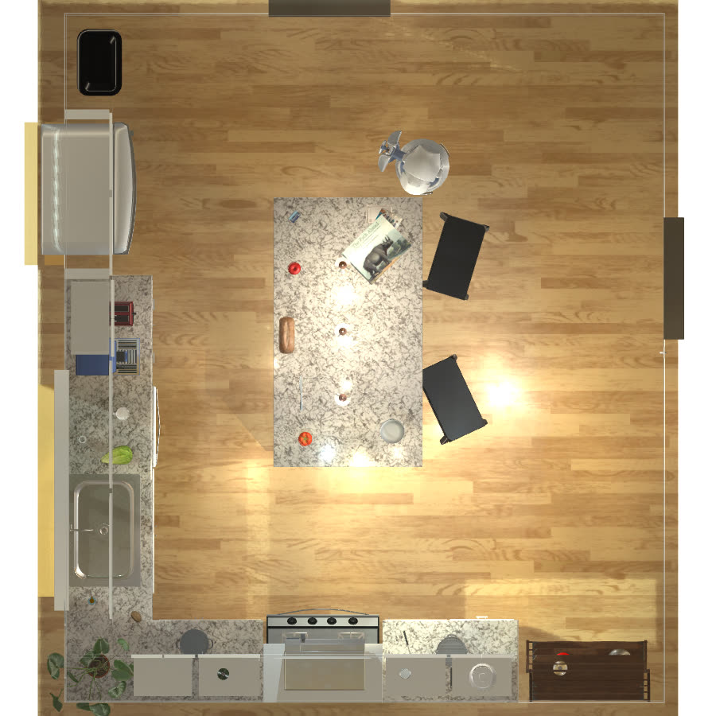
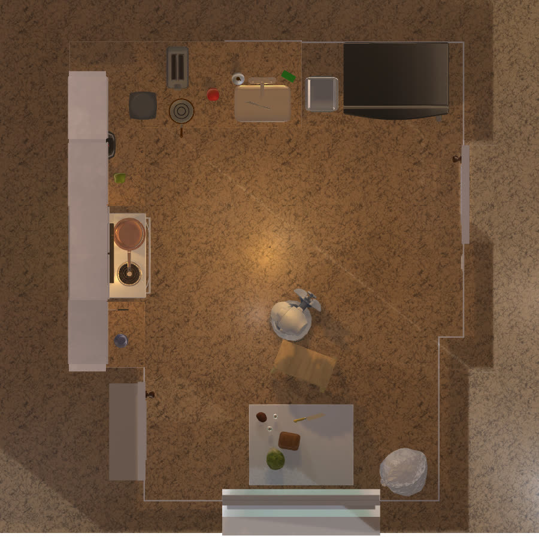
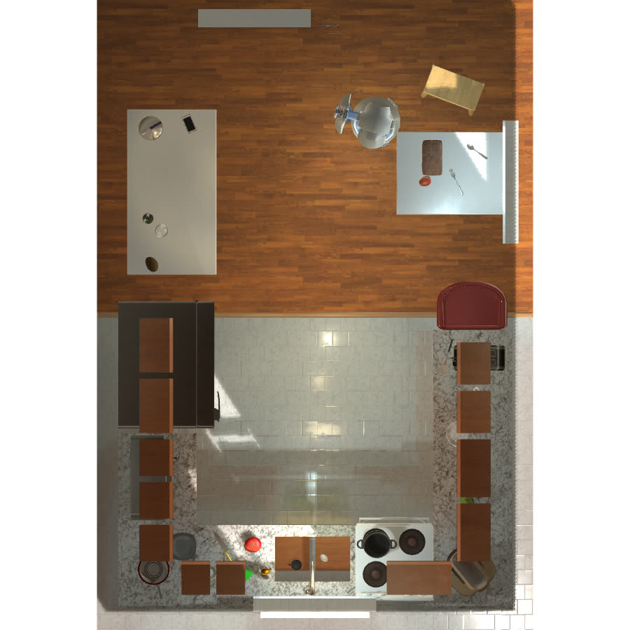
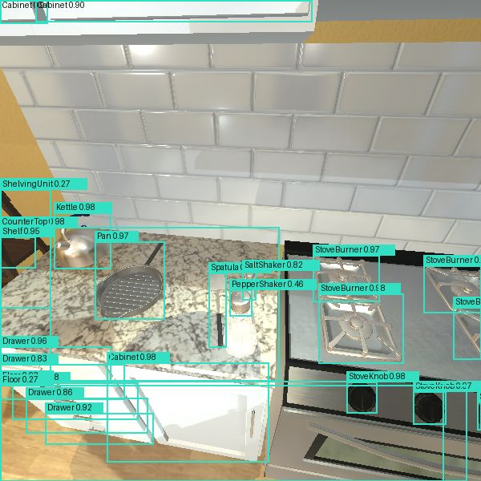
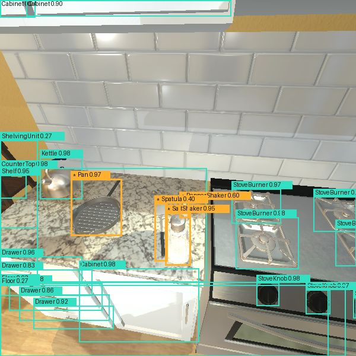

MISE
mise /miːz/ noun
from French mise en place, “putting in place”.
- kitchen The chef’s habit of having every ingredient and tool ready and in its place before cooking starts.
- this project Memory-Informed Small Embodied Agent: a small model that, like a good chef, puts everything in its place with the help of its own memory.
Say it like “cheese”, with an m.
Memory-Informed Small Embodied agent
A retrieval-based agent that lifts your local models to frontier level on robotic scene arrangement.
Arash NasrEsfahaniUniversity of TehranTaarLab
90 seconds
MISE at a glance
About
A small model, with a memory of its own
MISE combines three things: a small language model that runs on a laptop (Gemma 4, about 2 billion parameters), a small YOLO detector, and retrieval over Scene Memory, the notes the agent writes for itself while it practises in each kitchen.
It shows that, for simple scene arrangement, good retrieval and self-generated knowledge are enough to bring a local model to the level of frontier models.
Test bed
Three kitchens
MISE was developed in Kitchen 1 and shows the same results in Kitchens 2 and 3, which it had never seen.

Kitchen 2 unseen

Kitchen 3 unseen
All three are scenes of the AI2-THOR simulator: Kitchen 1 is FloorPlan1, Kitchen 2 is FloorPlan15 and Kitchen 3 is FloorPlan17.
How it works
From inputs to a finished task
Labelled images
Camera (colour + depth)
Own position
Instruction (EN / FA)
Practice rounds
Kitchen facts
SeeYOLO detectors
RecallScene Memory
PlanGemma 4 · on the laptop
Actskills · own map · retry
Outputactions in the kitchen
after every step it looks again
Action accepted?
See
A small detector names what the camera sees.


main detector: pepper shakercloser look: salt shakerLook-alikes
It holds the object up and looks closer: salt shaker, not pepper.
Its own map
Built only from what the agent has seen.
Three kinds of instruction
From one action to a goal
Atomic
one action
“Slice the apple.”
«سیب را بِبُر.»
Slice · Apple
Sequential
several actions, in order
“Turn on the toaster and then the coffee machine.”
«اول توستر و بعد قهوهساز را روشن کن.»
Turn on · Toaster›Turn on · Coffee machine
Abstract goal
a goal to break into actions
“Start the pot on the stove for soup.”
«قابلمه را برای سوپ روی اجاق بار بگذار.»
Put · Pot on burner›Turn on · Stove knob
Results
Atomic and sequential tasks: frontier level
Share of tasks completed in each kitchen’s test. Gemma 4 with Scene Memory against Opus 5.5 and GPT6-Sol without it.
Scene Memory, in every kitchen
All tasks, Gemma 4 without and with Scene Memory
Look-alikes named right
Main detector alone, and with the closer look
Abstract goals are still hard
All three kitchens, Gemma 4 with Scene Memory against the two large models
All numbers
Resources
Code, models and data
| Resource | Link | Licence |
|---|---|---|
| Code | GitHub | AGPL-3.0 |
| Detectors, Kitchen 1 | Hugging Face | model card |
| Detectors, Kitchen 2 | Hugging Face | model card |
| Detectors, Kitchen 3 | Hugging Face | model card |
| Images, Kitchen 1 | Hugging Face | CC BY 4.0 |
| Images, Kitchen 2 | Hugging Face | CC BY 4.0 |
| Images, Kitchen 3 | Hugging Face | CC BY 4.0 |
| Instructions (280, English and Persian) | Hugging Face | dataset card |
An English paper is in preparation.
Thanks
With special thanks to Dr. Hedieh Sajedi and Dr. Mehdi Tale Masouleh for their guidance throughout.